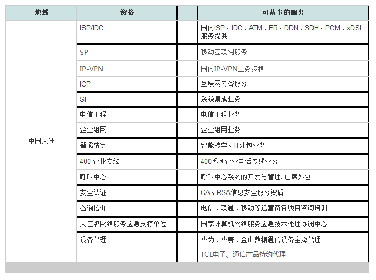

围绕企业网络接入、专线和组网需求提供服务支持。
ABOUT OSTAR TELECOM
关于奥斯达 连接企业需求与专业通信服务
深圳市奥斯达通信有限公司成立于2004年， 是华南区域综合信息网络运营服务商， 专注互联网接入、IDC数据中心、企业灾备、 地产配套通信及社区宽带运营等核心业务。
OSTAR TELECOM
CONNECT
NETWORK · SERVICE · TECHNOLOGY
提供通信工程、网络建设和系统集成相关服务。
重视项目交付后的技术沟通和长期服务关系。
由业务、工程、客户和运营团队共同支持项目实施。
DISCOVER OSTAR
了解奥斯达通信
从公司发展、服务理念、企业文化、 业务资质和人才建设等方面了解奥斯达通信。
COMPANY PROFILE
华南区域综合信息网络运营服务商
奥斯达通信成立于2004年，围绕互联网接入、 IDC数据中心、企业灾备、地产配套通信和社区宽带运营， 为政企及地产客户提供稳定、安全和持续的综合通信服务。
01
COMPANY PROFILE
2004
公司成立
1000万
注册资本
200万㎡+
累计运营服务面积
7×24
专业运维支持
深圳市奥斯达通信有限公司
深圳市奥斯达通信有限公司成立于2004年， 注册资本1000万元，总部位于深圳， 是华南区域领先的综合信息网络运营服务商。 公司为APNIC、CNNIC IP联盟成员， 拥有独立AS号和自有IPv4地址， 持有工信部IDC、ISP、呼叫中心等增值电信业务资质， 为三大基础电信运营商核心战略合作伙伴。
公司搭建全国多地骨干机房与传输节点， 核心团队具备专业技术认证和丰富行业经验， 深耕互联网接入、IDC数据中心、企业灾备、 地产配套通信及小区宽带运营五大核心业务。 面向地产行业，公司可承接楼盘新国标弱电建设、 5G室分基站施工及社区宽带全周期运营管理。
公司已与越秀、中铁、TCL、招商、华润等头部地产企业达成深度合作， 累计运营服务面积超过200万平方米， 具备社区宽带共建、运维和商业化运营的全流程实施能力。 服务客户覆盖华为、小米、招商银行、金蝶、 旷视、商汤等多个行业企业。
依托充足的自有网络资源、7×24小时专业运维 和定制化一站式解决方案， 公司已成为政企数据中心、地产社区通信配套的首选运营商， 持续提供稳定、安全、高效的综合通信网络服务。 企业坚持“业绩为本、价值共享”的发展理念， 持续完善绩效激励、人才培养和标准化服务体系。
全国网络资源
布局多地骨干机房与传输节点， 支持企业跨区域网络连接需求。
五大核心业务
覆盖互联网接入、IDC、企业灾备、 地产通信及社区宽带运营。
地产通信能力
支持弱电建设、5G室分施工及 社区宽带全周期运营管理。
持续运维服务
通过专业团队和标准化体系， 提供7×24小时技术响应。
CORPORATE CULTURE
企业文化与服务理念
企业使命
通过专业的信息通信服务， 支持企业构建稳定和高效的业务基础。
企业愿景
成为值得企业客户长期信赖的 通信技术服务合作伙伴。
核心价值
专业、责任、协作、持续改进， 关注客户实际需求和长期价值。
服务理念
重视沟通、响应和实施质量， 为客户提供持续稳定的服务支持。
DEVELOPMENT DIRECTION
面向企业数字化需求持续提升服务能力
- 持续完善企业网络和通信服务体系
- 加强通信工程和系统集成实施能力
- 提升项目协作、交付和运维服务效率
- 建立更加稳定的长期客户服务关系
HONORS & QUALIFICATIONS
中国大陆业务资质与服务能力
根据公司提供的资质资料，奥斯达通信在中国大陆可开展 互联网接入、数据中心、企业组网、通信工程、系统集成、 呼叫中心、安全认证、咨询培训及设备代理等相关服务。
02
CERTIFICATES & LICENSES
荣誉证书与业务许可
展示公司已提供的荣誉证书、登记证书及增值电信业务许可文件。

MAINLAND CHINA CAPABILITIES
01
02
03
04
覆盖网络、工程、安全与企业通信服务
资质资料列示的业务范围涵盖基础通信服务、增值电信服务、 企业网络建设、通信工程、信息安全、咨询培训及设备代理等方向。
网络与接入服务
ISP／IDC、SP、IP-VPN、ICP，以及国内互联网接入、 数据中心和移动互联网相关服务。
工程与系统集成
SI系统集成、电信工程、企业组网、 智能楼宇及IT外包相关业务。
企业通信与安全
400企业电话专线、呼叫中心系统开发与管理、 座席外包，以及CA、RSA信息安全服务。
咨询、应急与设备代理
运营商项目咨询培训、网络服务应急支撑， 以及华为、华赛、金山和TCL相关设备与产品代理。
国内ISP、IDC、ATM、FR、DDN、SDH、PCM及xDSL服务。
移动互联网服务及互联网内容服务。
国内IP-VPN业务及企业网络连接服务。
信息系统、网络系统和相关技术集成服务。
电信工程、企业组网、智能楼宇和IT外包业务。
400企业电话专线、呼叫中心系统开发、管理与座席外包。
CA、RSA相关信息安全服务能力。
运营商项目咨询培训及大区级网络服务应急支撑。
资料说明
本页面内容根据公司提供的资质清单整理。 具体许可项目、服务范围、有效期限及代理资格， 以公司当前有效证照、授权文件和相关监管要求为准。
CAREERS AT OSTAR
与专业、负责和重视协作的人共同成长
奥斯达通信现面向行政支持、网络技术和业务销售方向招聘人才。 具体岗位安排、任职条件及录用结果以公司正式通知为准。
03
JOIN OUR TEAM
提交应聘信息
→
加入奥斯达通信
欢迎认同专业服务、责任意识和团队协作的人才， 加入企业通信、网络技术、客户服务和运营支持团队。
OPEN POSITIONS
当前招聘岗位
共开放 3 类岗位，计划招聘 5 人。
ADMINISTRATION
招聘 1 人
行政助理兼司机
岗位职责及要求
- 年龄21－27岁，高中以上学历，身高175CM以上， 形象佳，持有有效机动车驾驶证。
- 身体健康、精力充沛，能够承受一定工作压力， 具备较强的安全意识。
- 能够熟练使用电脑及常用办公系统。
- 服役5年以上、退伍2年以内，或具备其他相关特长者优先考虑。
NETWORK ENGINEERING
招聘 2 人
网络工程师
岗位职责
- 协助销售人员及客服人员与IDC客户进行网络技术交流， 完成技术方案设计和文档编写。
- 负责IDC客户网络故障问题的沟通、协调与跟进。
- 为IDC客户提供网络技术支持。
- 负责体系内流程文档及相关规范的编写。
- 基于公司业务流程，组织协调各部门完成流程优化及更新。
- 根据数据分析方案进行业务数据统计与整理， 并在既定时间内完成提交。
岗位要求
- 计算机、网络、通信等相关专业毕业。
- 具有3年以上网络运维或技术支持工作经验。
- 对BGP、OSPF等路由协议及其应用有深入理解。
- 熟悉CISCO、华为、Juniper等主流网络设备 在IP网络中的应用。
- 具备较强的口头表达、沟通和协调能力。
- 具有IDC网络技术支持经验者优先； 具有电信运营商或IDC服务商售前技术支持经验， 并对IDC服务行业有较深理解者优先。
BUSINESS DEVELOPMENT
招聘 2 人
销售经理
岗位要求
- 普通全日制大专以上学历，计算机相关专业。
- 具有两年以上电信服务工作经验， 有电信行业背景。
- 性格开朗乐观，具备较强的沟通能力。
- 具有IDC或网络游戏行业工作经验者优先考虑。
WHAT WE VALUE
我们重视的工作品质
认真对待客户需求、岗位任务和工作结果。
能够与不同岗位共同推进项目和解决问题。
愿意学习通信、网络、项目和服务相关知识。
关注客户实际需求和服务过程中的使用体验。
APPLICATION
应聘方式
应聘人员可通过网站联系表单提交姓名、联系电话、 电子邮箱、应聘岗位及个人情况。公司收到信息后， 将根据岗位需求安排后续沟通。
招聘说明
岗位信息以公司正式通知为准
岗位职责、工作地点、薪酬待遇、招聘人数和录用条件， 可能根据公司实际业务安排进行调整。 发布前建议由公司人力资源或相关负责人再次审核全部招聘条件。
OUR COMMITMENT
关注每一个项目的实际需求
专业沟通
充分了解客户业务、网络环境和项目目标。
规范实施
建立清晰的项目计划、实施流程和交付记录。
稳定服务
关注项目质量、网络运行和客户使用体验。
长期合作
持续了解客户发展和后续信息通信需求。
CONNECT WITH OSTAR
联系奥斯达
→
了解更多公司与服务信息
欢迎就企业网络、通信工程、 系统集成、商务合作或人才招聘与我们联系。